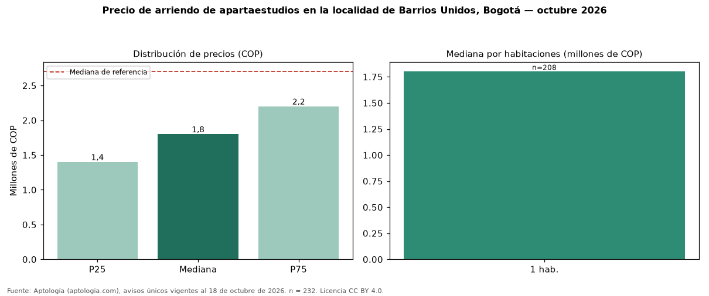

Precio de arriendo de apartaestudios en la localidad de Barrios Unidos, Bogotá — octubre 2026
Con 232 avisos únicos, el canon mediano de apartaestudios en arriendo en la localidad de Barrios Unidos, Bogotá es COP 1.800.000 al mes. Frente a toda la oferta de arriendo en la localidad de Barrios Unidos, Bogotá (COP 2.700.000), la diferencia es de 33 % por debajo. Por metro cuadrado, la mediana es COP 63.611/m² (+19 % frente a COP 53.408/m²), puesto 5 de 12 localidades comparables. Cruzando con la oferta de venta equivalente, la rentabilidad bruta implícita es 6,3 % anual. El área mediana es 28 m² (referencia: 58 m²). El estrato más frecuente es 4. La administración mediana informada es COP 290.000 (55 avisos), cerca de 16 % del canon. Datos abiertos CC BY 4.0 de Aptología; fuente y búsqueda de inmuebles: https://www.aptologia.com/arriendo-zona/bogota/localidad-barrios-unidos. Archivos: PDF de 2 páginas, CSV con las cifras y gráfica PNG.

| Avisos únicos | 232 |
|---|---|
| Percentil 25 | COP 1.400.000 |
| Mediana | COP 1.800.000 |
| Percentil 75 | COP 2.200.000 |
| Mediana por m² | COP 63.610 |
Fuente: avisos vigentes de portales inmobiliarios recopilados por Aptología, deduplicados (mínimo 30 avisos únicos por celda). Precios pedidos, no cerrados. Fecha: 2026-10-18.